The slide of the lecture is on the left, the same figure on the right, computed in the browser from the same data. The ▶ button moves the parameter step by step.
Why Tails Matter · Heavy Tails and Regular Variation · The Hill Estimator · The Mean Excess Function · Block Maxima and the GEV Distribution · Peaks over Threshold and the GPD · VaR and ES by Extreme Value Theory
Why Tails Matter
Crash Days against the Normal Distribution
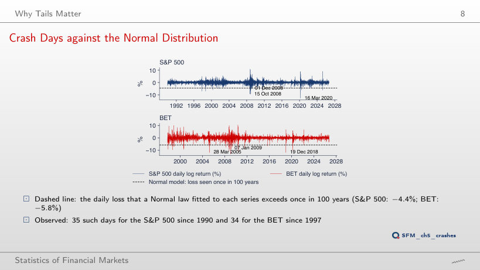
Answer
17 days, below −5.56%. The Normal distribution expects 0.0037 such days in 9,240 (probability 1/(10,000 × 252) per day). The level only moves from −4.44% to −5.56%: the tail of the Normal distribution falls so fast that a period 100 times longer moves the threshold by little more than one percentage point. BET has 22 days below its 10,000-year level (−7.25%). At T = 1 year, the S&P 500 has 120 days below −2.98%, against 36.7 expected.
Heavy Tails and Regular Variation
Power Laws Fall Much More Slowly
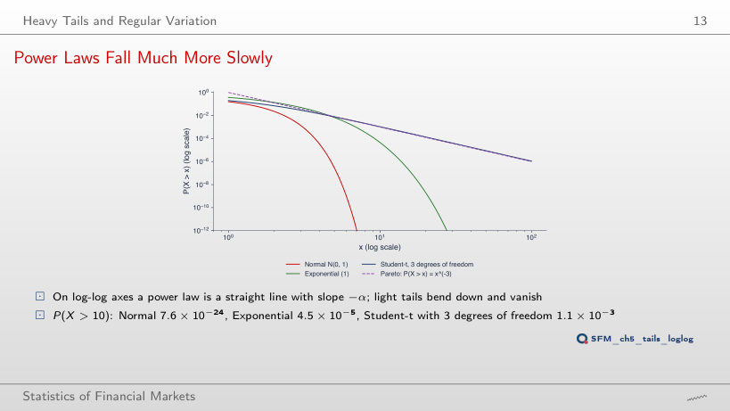
Answer
0.125 = 2−3: for a regularly varying tail, P(X > tx)/P(X > x) → t−α, with α = 3 for the Student-t with 3 degrees of freedom. At x = 2 the ratio is still 0.201, at x = 20 it is 0.126. For the exponential distribution the ratio is e−x, 1.9 × 10−22 at x = 50, and for the Normal distribution about 10−1629: light tails vanish at every doubling of the threshold, the power-law tail always loses the same factor 8.
Real Losses on Log-Log Axes
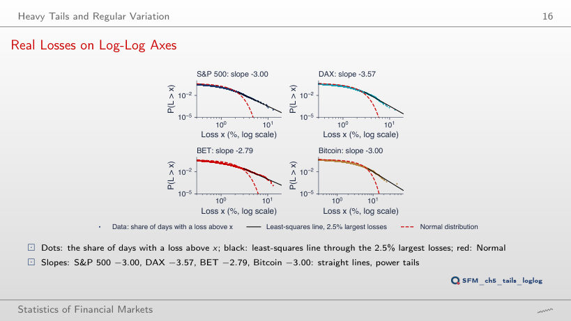
Answer
−2.50: the line reaches into the body of the distribution, where the points bend and flatten the line. At 10%, the Hill estimator also falls, to 2.04. DAX: from −3.57 to −2.65; BET: −2.17; Bitcoin: −2.31. At 0.5% (46 losses for the S&P 500), the slope of the DAX is −4.39: few points, high variability. The power law describes only the tail, and the estimate depends on how many losses enter it.
The Hill Estimator
Hill Plots of Daily Losses
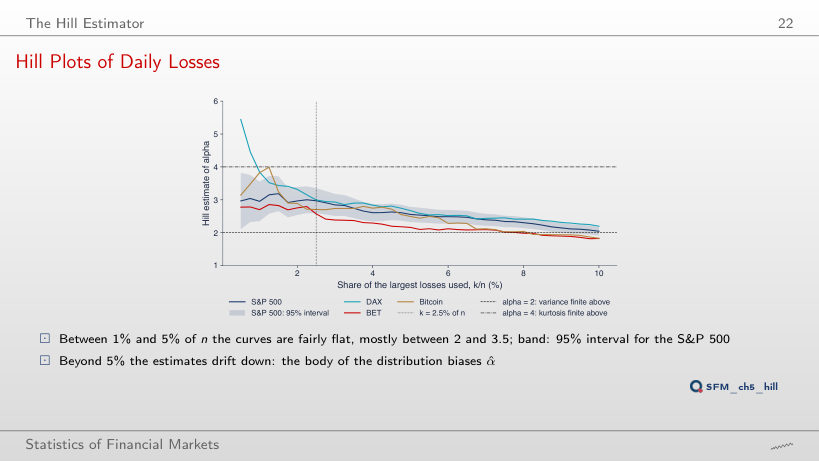
Answer
2.04, with the i.i.d. interval [1.91, 2.18], which no longer contains 2.97. With a large k the body of the distribution enters and biases the estimate downwards; the interval narrows (SE = α̂/√k), so a large k gives a precise estimate of a biased quantity. BET falls to 1.82, below 2, although it is 2.57 in the flat zone. The i.i.d. interval also understates the uncertainty: at k = 2.5%, the i.i.d. SE of the S&P 500 is 0.20 and the moving-block bootstrap SE (blocks of 20 days) 0.30, 1.5 times larger, because large losses come in clusters; for the DAX the two coincide (0.20).
Hill Plots of the BVB Stocks
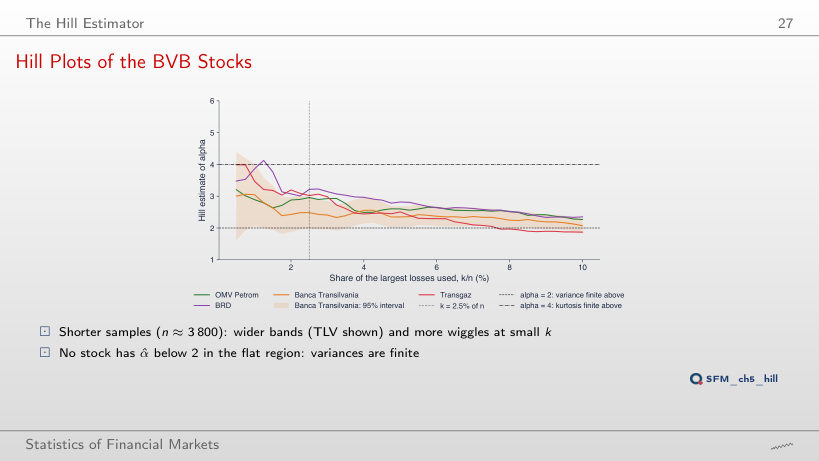
Answer
1.96, from 2.07 to 4.03, almost twice as wide. The width of the interval is 2 × 1.96 α̂/√k: k falls from 94 to 37 (√(94/37) = 1.59), and α̂ rises from 2.49 to 3.05. The BVB samples are 2.5 times shorter than those of the indices, so the same k/n gives fewer losses and wider bands; the S&P 500 has the interval [2.35, 3.56] at k = 1%. In the flat zone (1%–5%), none of the four stocks has α̂ below 2.
The Mean Excess Function
Empirical Mean Excess of Daily Losses
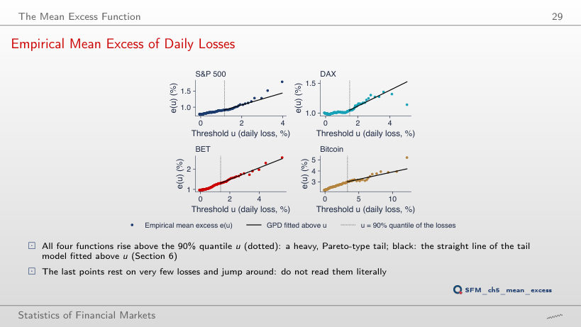
Answer
1.22%: the mean excess grows with the threshold, as a heavy tail requires. For a Pareto tail, e(u) = u/(α − 1) grows linearly; for the exponential distribution it would be constant, for the Normal distribution it would fall towards 0. BET: from 1.30% to 1.79%. At the 98% quantile, the GPD is fitted to only 185 excesses of the S&P 500 (against 924 at 90%), and ξ̂ rises from 0.158 to 0.255: noisier estimates, as the last points of the chart also show.
Block Maxima and the GEV Distribution
The Three Extreme Value Laws
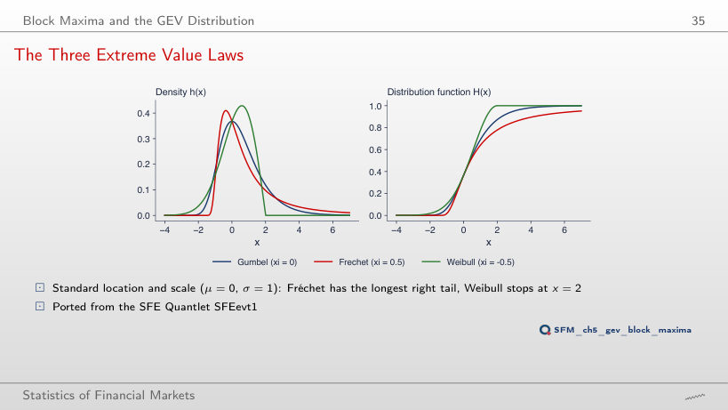
Answer
At x = 4: the upper endpoint is μ − σ/ξ = 0 − 1/(−0.25). As |ξ| falls towards 0, the endpoint moves away and the Weibull distribution approaches the Gumbel; the Fréchet distribution with ξ = 0.25 has tail index 1/ξ = 4, and P(X > 5) falls from 0.078 (ξ = 0.5) to 0.038, against 0.0067 for the Gumbel. The sign of ξ decides the type of tail, its size decides how heavy or how short it is.
The Theorem in a Simulation
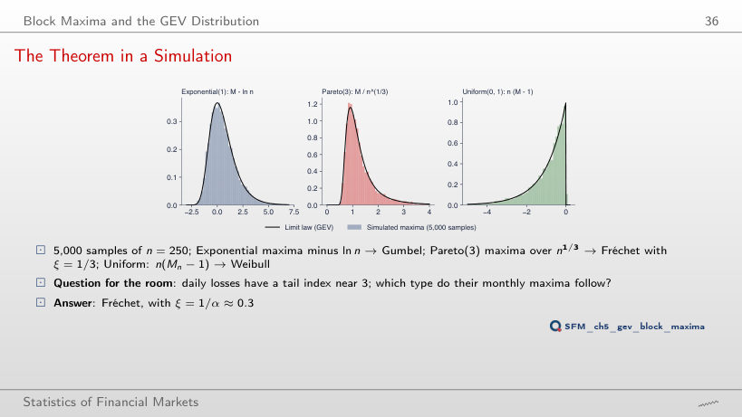
Answer
0.837 in the simulation; exactly, E[M2] − ln 2 = 1 + 1/2 − 0.693 = 0.807. In general E[Mn] = 1 + 1/2 + … + 1/n, and its difference from ln n tends to 0.577: the convergence to the Gumbel is slow, of order 1/n. For the uniform distribution, the mean of n(M − 1) is exactly −n/(n + 1): −0.667 at n = 2, almost −1 at n = 250. At n = 21 (one trading month) the means are already 0.593, 1.373 and −0.957. The values n ≠ 250 are extra runs of the lecture's code, with the same seed.
Does the GEV Fit? PP and QQ Plots
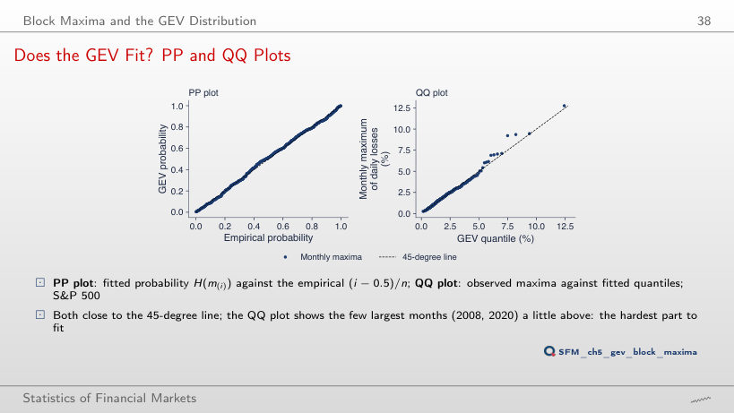
Answer
6.99%: an exponential tail puts the most extreme month at half its observed value, and the top points of the QQ plot rise far above the diagonal. The 10-year level falls from 7.4% (GEV) to 5.3% (Gumbel), a level exceeded in 12 of the 440 months, more than three times as often as once in 10 years. The Gumbel fit is an extra run, for comparison; the 95% interval of ξ̂ in the lecture, [0.13, 0.29], excludes 0. For BET (ξ̂ = 0.36), the GEV puts the largest month at 26.1%, against 13.1% observed: the fitted tail is heavier than the data.
Return Level Plot
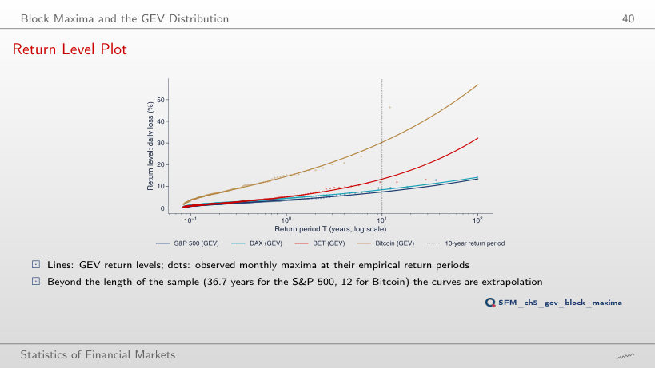
Answer
32.2%, almost 2.5 times the largest observed loss. With ξ̂ = 0.36, the return level grows roughly as Tξ: every multiplication of T by 10 raises the level by a factor of about 2.4. It is an extrapolation to 3.5 times the length of the sample; already at 10 years the bootstrap interval is [10.3%, 17.5%]. S&P 500, with ξ̂ = 0.21: 13.4% at 100 years, close to the largest observed loss (12.8%).
Peaks over Threshold and the GPD
GPD Densities and Tails
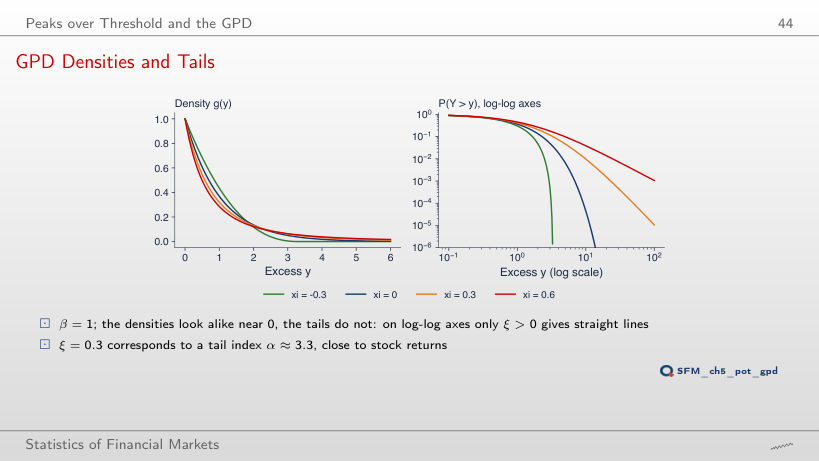
Answer
From ξ = 1/2: the variance exists only for α = 1/ξ > 2. The mean excess, β/(1 − ξ), exists up to ξ = 1. For ξ = 0.5, P(Y > 10) = 0.028 (β = 1), against 0.0098 for ξ = 0.3 and 4.5 × 10−5 for ξ = 0. The GPD fits of the lecture have ξ̂ between 0.12 and 0.22 for the four series: heavy tails with finite variance.
Parameter Stability
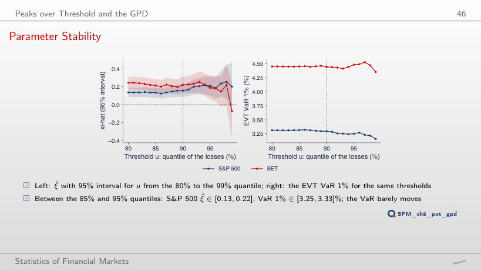
Answer
ξ̂ = 0.203, with a 95% interval from −0.07 to 0.47 (SE 0.138, four times larger than at 90%), but VaR 1% stays at 3.16%. VaR 1% lies inside the data (92 days beyond it in the sample), so it depends little on the shape of the tail; ξ̂ depends strongly on the threshold. Between the 85% and 95% quantiles: ξ̂ between 0.13 and 0.22, VaR 1% between 3.25% and 3.33%. BET at 99%: ξ̂ = −0.07, VaR 1% 4.35%.
Does the GPD Fit? PP and QQ Plots
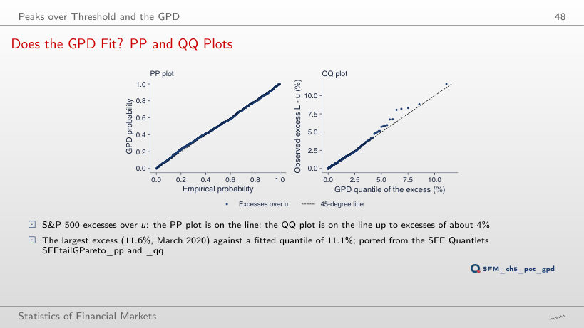
Answer
It falls below the diagonal: the excess is 10.24% (the threshold rose to 2.52%), and the fitted quantile 12.65%, because ξ̂ rises to 0.255 on only 185 excesses. The last point of the QQ plot depends strongly on ξ̂, hence on the threshold. For BET, the GPD above the 90% quantile puts the largest excess at 18.56%, against 11.74% observed: the fitted tail is heavier than the largest losses of the sample.
The Fitted Tails
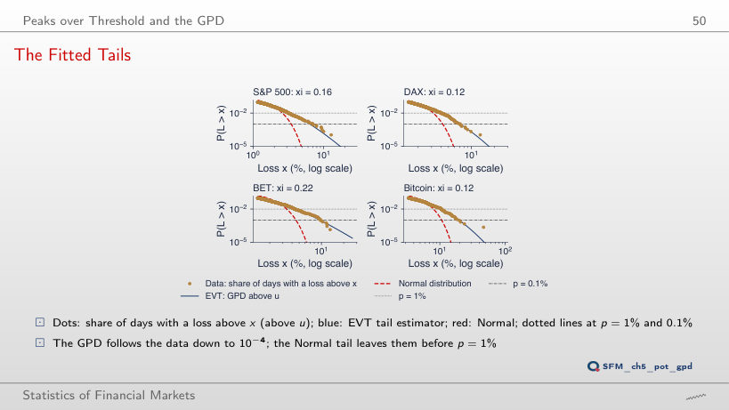
Answer
EVT 10.79%, Normal 4.18%, 2.6 times less. At p = 1%, the ratio is 1.27 (3.30% against 2.60%). The sample of 9,240 days holds on average 0.9 days beyond VaR 0.01%, so the historical quantile (10.21%) is only an interpolation between the two largest losses. The Hill quantile gives 15.02%: far in the tail, the estimators differ a lot. BET: EVT 18.10%, Hill 26.16%, historical 12.24%.
VaR and ES by Extreme Value Theory
Out of Sample: Estimate until 2019, Test 2020–2026
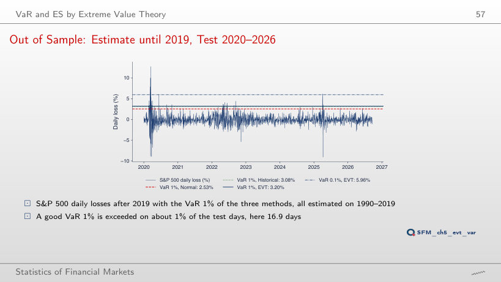
Answer
13 times, below the expected value; the EVT VaR 4 times, the historical one 5 times. The test period was calmer for BET than the estimation period 1997–2019. A VaR estimated once does not follow the volatility: there are too many exceedances after 2020 for the S&P 500 (EVT 25, historical 26) and too few for BET. At VaR 0.1%, the Normal distribution is still exceeded too often for all four series: S&P 500 23 days against 1.7, BET 4 against 1.7, Bitcoin 8 against 2.5.
Daily losses L = −r, in %, from log returns: S&P 500 and DAX from January 1990, BET from September 1997, Bitcoin from September 2014 (7 days a week), to 18 September 2026; OMV Petrom, BRD, Banca Transilvania and Transgaz from 2010, from the adjusted price. EODHD closing prices. The GEV fits, the bootstrap intervals and the simulated maxima are those of the lecture (the same rules and the same generator seed); Hill, GPD, VaR and ES are recomputed in the browser from the same losses.